Resumen.
A partir de un estudio longitudinal se muestra la evolución de la plantilla docente del Departamento de Administración del Centro Universitario de Ciencias Económico Administrativas (CUCEA), donde el perfil del docente investigador ha disminuido por los procesos personales de vida de los propios profesores. Por ello, la formación de investigadores debe ser una prioridad para la generación de conocimiento, pues con ella la Universidad de Guadalajara puede mejorar sus actividades de docencia, gestión académica, tutoría e investigación, tareas que en ocasiones no se concretan por factores como el presupuesto, lo que impide incorporar más investigadores ante la creciente jubilación y los decesos de profesores y ante su participación en programas como PRODEP y SNI. Para mantener un nivel educativo competitivo se debe promover la consolidación de nuevos docentes investigadores. La información se obtuvo en dos periodos, 2012 y 2024, mediante encuestas a los profesores investigadores del Departamento; el enfoque es cualitativo, descriptivo y no experimental, y evidencia que el cuadro de investigadores deberá consolidarse.
Palabras clave:
Ciencias, administrativas, investigación, administración, profesores.
Abstract.
A longitudinal study examines the evolution of the faculty at the Department of Administration of the University Center for Economic and Administrative Sciences (CUCEA), where the number of research professors has decreased due to the personal life circumstances of the professors themselves. Therefore, the training of researchers should be a priority for knowledge generation, as it would allow the University of Guadalajara to improve its teaching, academic management, mentoring, and research activities—tasks that are sometimes hindered by factors such as budget constraints. This prevents the incorporation of more researchers in the face of increasing retirements and deaths of professors, as well as their participation in programs like PRODEP and SNI. To maintain a competitive educational level, the consolidation of new research professors must be promoted. The data was obtained in two periods, 2012 and 2024, through surveys of the Department's research professors. The approach is qualitative, descriptive, and non-experimental, and it demonstrates that the research staff needs to be strengthened.
Keywords:
Sciences, administrative, research, administration, professors.
Introducción
La investigación ha sido, desde sus inicios, el pilar sobre el cual se construyen las grandes transformaciones del conocimiento humano: sin investigación no hay avance, y sin avance no hay evolución social, tecnológica ni económica. En un mundo cada vez más interconectado, los centros universitarios no solo forman profesionales, sino que tienen la responsabilidad de impulsar la generación de nuevo conocimiento mediante la formación de investigadores, lo que exige un esfuerzo estructurado de universidades y gobiernos para garantizar su permanencia, desarrollo y consolidación. A nivel mundial, las universidades con modelos sólidos de investigación se han convertido en líderes de innovación que vinculan a sus investigadores con la industria, el gobierno y organismos internacionales; sin embargo, la falta de apoyo institucional, el financiamiento insuficiente y las condiciones laborales precarias limitan el avance del conocimiento en muchas regiones. Por eso, conocer la situación de la formación de investigadores es una necesidad estratégica, pues la universidad que no invierte en investigación se reduce a transmitir información, sin aportar al conocimiento global.
En México, la investigación universitaria enfrenta desafíos estructurales que han dificultado su crecimiento y consolidación como eje estratégico de desarrollo, pues aunque el país cuenta con instituciones de alto prestigio, la disminución del financiamiento público, los obstáculos administrativos y la falta de plazas de tiempo completo han limitado la formación de nuevos cuadros de investigadores y si bien el Sistema Nacional de Investigadores (SNI) y el Programa para el Desarrollo Profesional Docente (PRODEP) han intentado fortalecer la producción científica, el acceso a estos estímulos sigue siendo limitado, especialmente en áreas administrativas y económicas.
A nivel estatal, Jalisco tiene una gran responsabilidad en la consolidación de investigadores, pues es una de las entidades con mayor dinamismo económico y tecnológico y sede de la Universidad de Guadalajara. Aun así, enfrenta la falta de recursos y el escaso apoyo a los cuerpos académicos: la reducción del presupuesto universitario y la alta carga docente han limitado la generación de conocimiento aplicable al desarrollo del estado. Por ello es prioritario fortalecer la formación de investigadores con financiamiento adecuado, estabilidad laboral y vinculación con los sectores productivos. Al ser la investigación una actividad sustantiva de las universidades, representa la oportunidad de generar conocimiento nuevo mediante el trabajo de sus profesores investigadores; sin embargo, ha venido de más a menos por la disminución de recursos federales y estatales y la precaria asignación de partidas para equipo de cómputo, software especializado, estancias académicas y viáticos.
El recurso humano vinculado a la investigación disminuye de forma permanente, sea por jubilación o, recientemente, por el incremento de fallecimientos derivados de la pandemia de COVID-19, a pesar de la contratación de profesores de asignatura que, en la mayoría de los casos, solo se dedican a la docencia. Para comprender esta situación se aplicaron dos encuestas, en 2012 y 2024, desde un enfoque longitudinal, en el Departamento de Administración del CUCEA, abordando: grado de estudios; tipo de nombramiento; género; antigüedad laboral; líneas, proyectos y objetos de estudio; productos de investigación; cuerpos académicos; principales dificultades; financiamiento y redes de investigación. El análisis muestra la necesidad de incorporar profesores investigadores que fortalezcan la docencia, la gestión académica, la tutoría y la investigación, funciones que los organismos federales evalúan mediante indicadores clave para asignar presupuesto.
El aporte de este estudio radica en situar el fenómeno en un momento histórico de transformación del perfil docente y en responder: ¿cómo influye la situación de la plantilla docente en la generación de conocimiento frente al relevo generacional de investigadores?, y ¿cuál es el papel de los profesores investigadores en la permanencia y consolidación de la plantilla ante el cambio generacional? Ante la jubilación y los decesos, y en un contexto global donde las universidades líderes han consolidado ecosistemas de innovación, México requiere políticas que garanticen competitividad académica y científica. Por ello se propone crear mecanismos y lineamientos internos, así como programas de apoyo del Centro Universitario y de la Universidad de Guadalajara, para incorporar nuevos investigadores y respaldar a los ya existentes.
Aspectos Jurídicos
El conocimiento de los aspectos jurídicos es fundamental al investigar el desarrollo interno del personal académico de la Universidad de Guadalajara, y en particular del CUCEA, ya que estos marcos normativos garantizan transparencia, rigor metodológico y ética, protegen los derechos de los docentes y aseguran que los hallazgos sean válidos y aplicables a la mejora institucional. Los reglamentos internos del CUCEA y las disposiciones universitarias establecen criterios de contratación, promoción, evaluación, financiamiento y participación en cuerpos académicos, cruciales para comprender el crecimiento del personal docente.
La fundamentación normativa legitima la investigación ante instancias académicas y gubernamentales y facilita su implementación en políticas educativas. A continuación, se señalan los artículos a los que se apegó este estudio:
El artículo 3º. Constitucional establece la obligatoriedad de la educación hasta el nivel superior que en su fracción X, señala que corresponde al Estado, y en particular a las autoridades federales y locales políticas para fomentar la inclusión, permanencia y continuidad (D.O.F./CPEUM, D.O.F.2019).
La Ley de Educación Federal (D.O.F./Ley General de Educación, 2019), establece en su artículo 53, el desarrollo de la investigación, la ciencia, las humanidades, la tecnología y la innovación, y en su fracción II el apoyo de la capacidad y el fortalecimiento de los grupos de investigación científica.
La Ley de Educación del Estado de Jalisco (P.O./ Ley de Educación del Estado de Jalisco, 1997), menciona en su artículo 68 que las universidades e instituciones de educación superior deberán realizar las siguientes funciones: docencia, investigación, difusión de la cultura y protección del medio ambiente y extensión y vinculación.
El Estatuto General de la Universidad de Guadalajara, en su artículo 126, establece en la estructura de la Secretaría Académica la existencia de la Coordinación de Investigación que será “responsable de la planeación, operación, evaluación y difusión de los proyectos de investigación científica y desarrollo tecnológico que estén bajo la responsabilidad de los Centro Universitarios. Garantizando con esto el cumplimiento a los aspectos jurídicos que demanda esta investigación.
Aspectos sustantivos
En México la tarea de crecimiento y desarrollo de la investigación ha recaído principalmente en Instituciones de Educación Superior (IES) con la ayuda de los sectores, tanto públicos como privados, sin embargo, organismos internacionales como el Banco Mundial o la UNESCO informan que a la fecha nuestro país gasta el equivalente a 0.5% de su PIB en investigación y desarrollo, por lo que esta cifra está por debajo del porcentaje mundial que es de 2.3%, ya que países como Israel, Corea o Finlandia destinan hasta 3% del PIB, cifra que se ve muy lejana en México, y agregando a esto que, se le agrega que cerca de 70% de dicho gasto proviene de fondos públicos (presupuesto gubernamental), es posible observar que como país se tienen aún muchas áreas de oportunidad. (Villanueva y Amorós, 2019).
Por medio del análisis de diferentes indicadores de producción, visibilidad, impacto, colaboración, liderazgo y excelencia en el periodo 2008-2018, se destacó que México desde hace más de 20 años es el segundo de América Latina en producir conocimiento científico después de Brasil. La República Mexicana ocupa el lugar 28 por el volumen de producción científica, con más de 25,000 artículos científicos anuales en los que se presentan nuevos resultados de impacto nacional e internacional. (Toche, 2019).
Al hablar de evolución de la producción científica, la aportación de México al conocimiento mundial aumentó de 0.7 a 1% en cinco años. Se dice ser una cifra alentadora; pero comparado el crecimiento mexicano con el de Brasil queda por debajo, pues el país sudamericano produce más del triple de artículos cada año, casi 80,000. Señala Mariusz Janczur, investigadora de la Facultad de Ciencias de la Universidad Autónoma del Estado de México; pues en México se tiene demasiado centralismo en investigación, haciendo referencia al organismo que administra la investigación, Consejo Nacional de Ciencia y Tecnología (CONACYT), por el contrario, los países con la mejor ciencia en el mundo son los que tienen un sistema descentralizado como Estados Unidos o Gran Bretaña. (Toche, 2019).
A pesar de su importancia, el presupuesto destinado a la investigación y, sobre todo, al personal académico ha disminuido en los últimos años: el congelamiento de plazas de tiempo completo y la insuficiencia financiera para contratar personal temporal afectan seriamente esta actividad y ponen en riesgo la continuidad de los cuerpos académicos.
Por otro lado, la situación actual de las universidades públicas y en particular la Universidad de Guadalajara (UDG), presenta envejecimiento de la planta académica y profesores dedicados a la docencia y por consiguiente de los cuadros de investigadores, además, no existe hasta el momento, un programa para la incorporación de jóvenes investigadores egresados de los programas doctorales de la institución o de otras universidades nacionales y extranjeras, a pesar de la incorporación de profesores jóvenes a las filas de la cátedra que en promedio están entre 30 y 35 años. El reto que se plantea en la UDG es cómo reemplazar a los profesores jubilados o fallecidos con investigadores jóvenes que sean contratados con plaza definitiva y propiciar con esto continuidad en los proyectos de investigación derivados de las líneas de investigación definidas por los departamentos y centros o institutos.
Es por esta razón que el Departamento de Administración de la Universidad de Guadalajara, ha analizado en el periodo 2012 y 2024, la evolución de la actividad de investigación a partir de la encuesta realizada a los profesores de asignatura y profesores de carrera, en el que se detalla las características de los investigadores, en cuanto al tipo de nombramiento, antigüedad, líneas de investigación, tipo y cantidad de publicaciones, número de miembros con perfil PRODEP, miembros del SNI, pertenencia a cuerpos académicos o grupos de investigación, presupuesto destinado y principales problemáticas para llevar a cabo esta tarea.
Método
Este estudio emplea un diseño longitudinal cualitativo, descriptivo y no experimental, cuyo objetivo es analizar las características del personal académico que realiza investigación en el Departamento de Administración del CUCEA y evidenciar la necesidad de incorporar nuevos cuadros docentes investigadores ante la movilidad y las bajas del profesorado, a fin de mantener las líneas de investigación, la continuidad de las publicaciones y la incorporación a programas como PRODEP y el Sistema Nacional de Investigadores (SNI).
La recopilación de datos se realizó en dos etapas; la primera, realizada en 2012, consistió en la recopilación de los registros estadísticos institucionales del Departamento de Administración y la aplicación de un cuestionario estructurado que combina preguntas abiertas y de opción múltiple dirigido al profesorado que realiza investigación. Este instrumento recopiló información sobre la trayectoria académica, las actividades de investigación, la productividad y la participación institucional.
La segunda etapa, realizada en 2024, replicó el diseño comparativo mediante el análisis de informes actualizados de actividad departamental, estadísticas institucionales públicas y la aplicación de un segundo cuestionario de opción múltiple dirigido al profesorado investigador de tiempo completo y adjunto. La comparación longitudinal de ambos conjuntos de datos permitió identificar tendencias, continuidades y cambios estructurales en la capacidad de investigación del departamento. El estudio es relevante para el liderazgo educativo porque analiza cómo la formación y consolidación de investigadores fortalecen la capacidad estratégica de las instituciones de educación superior, entendiendo la investigación como un proceso organizacional clave para la toma de decisiones académicas (Romero, 2019).
Discusión y conclusiones
La discusión se fundamenta en un enfoque cualitativo, interpretativo y comparativo, que contrasta los datos empíricos de los cuestionarios aplicados a profesores de tiempo completo y de asignatura con el análisis documental de informes institucionales y estadísticas históricas del Departamento de Administración. Esta triangulación, de lógica inductiva, permitió identificar patrones de evolución, permanencia y transformación en la gestión académica y el desarrollo investigador del profesorado, y reflexionar sobre sus implicaciones estructurales, sociales y académicas.
En 1994 inicio la Reforma Universitaria creándose la Red de Centros Temáticos en la zona metropolitana y los Centros Regionales en el Estado de Jalisco, con ello se dio forma a la estructura departamental que hoy establece las funciones básicas de docencia, investigación gestión académica y tutoría en la Universidad de Guadalajara. En 1995 entró en funciones el Centro Universitario de Ciencias Económico Administrativas, que en la actualidad (2024) cuenta con 25,872 alumnos, ver gráfica no. 1.
Resultados
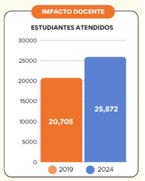
Gráfica 1: Estudiantes atendidos. Autoría DAD. Fuente: página web DAD CUCEA.
Centro universitario que actualmente cuenta con15 programas de licenciatura, ver tabla no. 1.
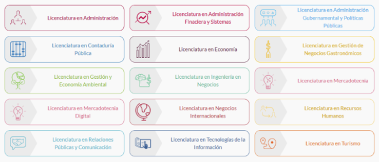
Tabla 1: Programas Académicos CUCEA 2024. Autoría CUCEA. Fuente página web CUCEA 2024.
Actualmente cuenta con 20 programas de posgrado, en maestría, ver tabla no. 2.
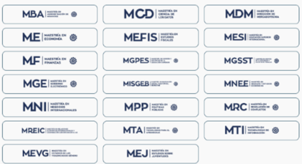
Tabla 2: Programas de Posgrado (Maestría) CUCEA 2024. Autoría CUCEA. Fuente página web CUCEA 2024.
Y actualmente con 7 programas de doctorado, ver tabla 3.
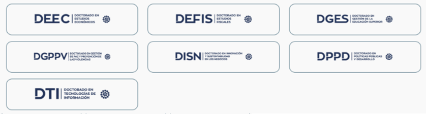
Tabla 3: Programas de Posgrado (Doctorado) CUCEA 2024. Autoría CUCEA. Fuente página web CUCEA 2024.
Actualmente más de 400 profesores con perfil PRODEP y 120 miembros del SNI, en la Universidad de Guadalajara de acuerdo con el informe del Departamento.
Su estructura orgánica está compuesta por la Rectoría de Centro; tres Secretarías Académica, Administrativa, Vinculación y Desarrollo Empresarial; tres Divisiones, Contaduría, Economía y Sociedad; Gestión Empresarial y quince departamentos, entre ellos el Departamento de Administración.
El Departamento de Administración surge formalmente en 1995, a la fecha ha tenido cinco titulares: Mtro. Ramón Balpuesta Pérez 1995-2000, Dra. Bertha Ermila Madrigal Torres 2000-2001, Dr. Andrés Valdés Zepeda 2001-2010, 2013-2016; 2016-2019, Dr. Víctor Manuel Castillo Girón 2010-2013; y Dr. Cesar Omar Mora Pérez 2019-2024.
Las academias que formaron parte del Colegio Departamental en 1995 fueron siete; en 2006 se realizaron algunas modificaciones en cuanto a la estructura del Colegio, la Academia de Administración Pública desapareció del área de Administración por ser competencia del Departamento de Políticas Públicas; además se crearon en 2019 las academias de Innovación y Emprendimiento, Gestión Organizacional, Comunicación Organizacional, Relaciones Públicas Estratégicas y Aprendizaje de Lenguas Extranjeras. Las unidades complementarias a la estructura departamental han funcionado normalmente entre ellas se encuentra el Instituto de Desarrollo de Innovación y Tecnología para las Pequeñas y Medianas Empresas (IDITPyMe) y el Centro de Investigaciones Administrativas, (CINA), esta última empezó funciones formales a partir del año 2022.
Para determinar las características del personal del Departamento de Administración y, en particular, la forma en que se ha realizado la actividad de investigación, se aplicó una encuesta a profesores de tiempo completo, de asignatura y técnicos académicos. A continuación, se presenta la información a detalle.
Grado de Estudios. Conocer el grado de estudios del personal docente del Departamento de Administración de 2012 a 2024 permite identificar patrones de profesionalización académica, evaluar la evolución institucional y anticipar tendencias en la formación del profesorado, base para el diseño de políticas educativas.
En 2012 se contaba con 127 profesores de los cuales, 62 (49%) con grado de licenciatura; 53 (42 %) contaban con el grado de maestría; 12 (9%) estudiantes de doctorado; en la actualidad 2024, son un total de 214 profesores; 160 (75%) profesores con grado de maestría; 54 (25%) profesores con grado de doctor, ver tabla no. 4.
| Grado de estudios profesores Departamento de Administración 2012, 2024 | |||
|---|---|---|---|
| Grado de estudios | 2012 | 2024 | % incremento |
| Licenciatura | 62 | 0 |
|
| Maestría | 53 | 160 | 302% |
| Doctorado | 12 | 54 | 450% |
| T O T A L | 127 | 214 | 169% |
Tabla 4: Grado de estudios profesores Departamento de Administración 2012, 2024. Autoría propia. Fuente Memoria 2012, página web DAD, CUCEA 2024.
Tipo de nombramiento. Conocer el tipo de nombramiento del profesorado entre 2012 y 2024 permite analizar la estabilidad laboral, el compromiso institucional y la participación en investigación, un tema clave para evaluar la consolidación académica.
El Departamento de Administración en su inicio en 1995 estaba integrado inicialmente con los profesores pertenecientes a la extinta Facultad de Administración con una plantilla de 84 elementos de las siguientes categorías: 52 de asignatura, 5 de medio tiempo, 20 de tiempo completo y 7 técnicos académicos; para el año 2012 aumentó el número de profesores a 127, lo que representa un incremento del 51%: 67 de asignatura, profesores de medio tiempo 4, 54 tiempo completo, y 4 técnicos académicos; ya para el 2024 el número total de profesores es de 214, lo que representa un incremento del 68.5% respecto al 2012 distribuidos de la siguiente manera: 160 profesores de asignatura, 2 de medio tiempo y 52 de tiempo de completo y 0 técnicos académicos, ver tabla no. 5, gráfica no. 2 y 3.
| Profesores y Técnicos Académicos en el Departamento de Administración | |||||
|---|---|---|---|---|---|
| Personal | 1995 | 2012 | % inc. | 2024 | % inc. |
| Profesores de asignatura | 52 | 67 | 29% | 176 | 163% |
| Profesores de medio tiempo | 5 | 4 | -20% | 2 | -50% |
| Profesores de tiempo completo | 20 | 54 | 170% | 36 | -34% |
| Técnicos Académicos | 7 | 4 | -43% | 0 | -100% |
| T O T A L | 84 | 127 | 51% | 214 | 68.5% |
Tabla 5: Total de Profesores y Técnicos DAD. Autoría propia. Fuente: Informes y estadísticas DAD 2012 y página web DAD CUCEA.
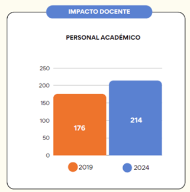
Gráfica 2: Personal académico del DAD. Autoría DAD. Fuente: página web DAD CUCEA.
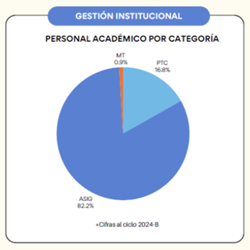
Gráfica 3: Personal académico por categoría. Autoría DAD. Fuente: página web DAD CUCEA.
A pesar del incremento de profesores de asignatura durante los años de 2012 al 2024, se han presentado defunciones y jubilaciones de profesores de tiempo completo, de marzo 2020 a enero 2024, han fallecido 7 profesores, 5 de asignatura y 2 de tiempo completo; en ese mismo periodo se jubilaron 14 profesores, 5 de asignatura, 8 de tiempo completo y 1 técnico académico; mientras que los profesores de tiempo completo que están en edad de jubilarse son 18 profesores, estableciendo que la mayoría de las plazas vacantes definitivas en cualquier categoría se congelaron, ver tabla no. 6.
| Profesores fallecidos y en edad de jubilación | ||||
|---|---|---|---|---|
Profesores Categoría |
Profesores fallecidos | Profesores jubilados | Profesores en edad de jubilación | T O T A L |
| Asignatura | 5 | 5 | 18 | 28 |
| Tiempo completo | 2 | 8 | 17 | 27 |
| Técnicos académicos | 1 | 1 | ||
| T O T A L | 7 | 14 | 35 | 56 |
Tabla 6: Profesores fallecidos y en edad de jubilación. Autoría propia. Fuente: Control de personal DAD, 2024.
Género. Establecer el género del personal académico del Departamento de Administración del CUCEA es fundamental para visibilizar la participación equilibrada de mujeres y hombres en la docencia y la investigación, lo que fortalece la equidad y la diversidad intelectual en la producción científica y constituye un indicador de calidad y responsabilidad institucional.
Esta característica en los profesores y profesoras se ha desequilibrado en años recientes, mientras que en 2012 se tenía 79 hombres y 48 mujeres, en 2024 se cuenta con 106 hombres y 108 mujeres, presentando un incremento de 60 profesoras, lo que representa un 225% contra las registradas en el 2012, mientras que los hombres existe un incremento 27 profesores, con un incremento respecto al 2012 del 134% y un aumento del 169% en el total de profesores y profesoras, encontrando que la tendencia de contratación es contratar más profesoras que profesores, invirtiendo actualmente las tendencias de contratación pasadas, de ver tabla no. 7, gráfica no. 4.
| Género: profesoras y profesores del Departamento de Administración 2012 y 2024 | |||
|---|---|---|---|
| Género | 2012 | 2024 | % Inc. |
| Hombres | 79 | 106 | 134% |
| Mujeres | 48 | 108 | 225% |
| Total | 127 | 214 | 168.5% |
Tabla 7: Género: profesoras y profesores del Departamento de Administración 2012 y 2024. Autoría propia. Referencia: página web DAD, CUCEA 2024.
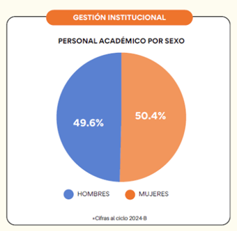
Gráfica 4: Personal académico por sexo Departamento de Administración. Autoría DAD. Fuente página web DAD, CUCEA 2024.
Antigüedad Laboral. La antigüedad laboral del profesorado es un indicador clave para comprender la experiencia acumulada, el compromiso institucional y la trayectoria académica, y permite planificar relevos generacionales y políticas de desarrollo profesional.
El número de años de actividad laboral se encuentra en el rango de 0 a 5 (18) %, 6 a 10 (11%), el rango más amplio entre los 11 y los 20 años, (33%), de 20 a 30 años (11%); y de más de 30 años (27%), ver gráfica no. 5. Se concentra el mayor número de profesores con antigüedad en categorías altas de PTC Titulares.
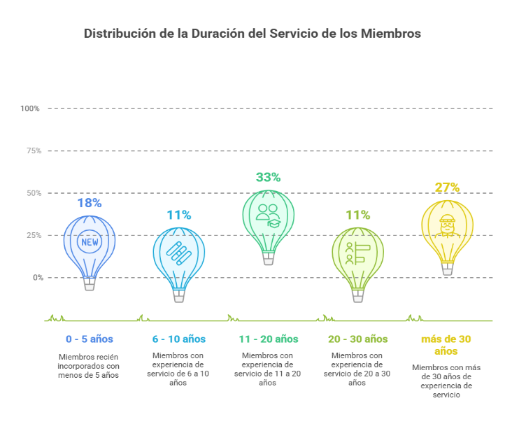
Gráfica 5: Antigüedad Laboral de los profesores miembros del DAD. Autoría propia. Fuente: Página web DAD, CUCEA 2024.
Miembros de PRODEP y SNI. La identificación de miembros del Programa para el Desarrollo Profesional Docente (PRODEP) y del Sistema Nacional de Investigadores (SNI) es fundamental para valorar la consolidación académica de las instituciones de educación superior en México. De acuerdo con la SEP (2019), el PRODEP impulsa la profesionalización docente, mientras que el SNI reconoce la calidad del trabajo científico con criterios rigurosos de evaluación (CONACYT, 2020). La pertenencia a estos programas eleva el prestigio individual y fortalece el posicionamiento institucional.
En los últimos años el número de miembros del Programa de Desarrollo para el Profesorado, ha disminuido sensiblemente debido al fallecimiento y jubilación de algunos profesores; pasando de 27 en 2019 a 24 miembros en 2024, aún a pesar de que algunos profesores se incorporaron como miembros PRODEP Y SNI; en cuanto al Sistema Nacional de Investigadores se ha incrementado sustancialmente, en 2019 eran 5 y en diciembre 2024 ascienden a 24, sin embargo, 11 de los profesores son de tiempo completo y 10 de asignatura. Por lo que es importante formalizar la relación de estos últimos convirtiendo sus plazas a tiempo completo, ver tabla no. 8, gráfica no. 6.
| Miembros PRODEP y SNI | |||
|---|---|---|---|
| Profesores / Año | 2019 | 2024 | % Inc. |
| PRODEP | 27 | 24 | -11% |
| S.N.I. | 5 | 24 | 375% |
Tabla 8: Profesores miembros PRODEP y SNI. Autoría propia. Fuente: página web DAD, CUCEA 2024.
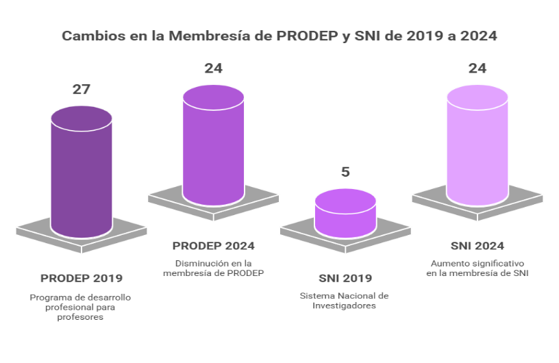
Gráfica 6: Miembros PRODEP Y SNI. Autoría propia. Fuente: página web DAD, CUCEA 2024.
Líneas de Investigación. Identificar las líneas de investigación del personal académico es esencial para comprender la orientación y coherencia del trabajo científico, pues reflejan las áreas prioritarias de la institución y la capacidad de los docentes-investigadores para generar conocimiento pertinente y con impacto social; además, permiten integrar cuerpos académicos y orientar los recursos hacia temas de alta relevancia (De la Torre & Pérez, 2018).
Según Garza y Ledezma (2015), una institución que gestiona adecuadamente sus líneas de investigación logra mayor visibilidad académica, incrementa su productividad y mejora su competitividad nacional e internacional.
En la primera encuesta realizada en 2012 se clasificaron las líneas de investigación en cuatro áreas básicas: Administración Empresarial, Administración Pública y Educación, Pequeñas Empresas, Administración y Administración Pública, Economía y Mercadotecnia, la mayoría de las líneas se centraron en el Área de Educación con diferentes temas que van desde la vinculación universitaria a la evaluación de la educación.
En el mismo periodo varias líneas se relacionaron con el Área de Administración, con diversos temas, Capital Humano, Comportamiento Organizacional, Pequeñas y Medianas Empresas, Administración Pública, Economía y Mercadotecnia.
En el 2024 los resultados arrojaron los siguientes temas investigación ligados a administración: Responsabilidad Social Empresarial, Sostenibilidad, Teoría de las Organizaciones, Articulación Productiva, Administración Estratégica, Administración Pública, Cadenas Productivas, Clúster, Redes Empresariales y Alta Dirección, Técnicas y Herramientas para el diagnóstico organizacional, Gestión en las Organizaciones y Emprendimiento, Factores psicosociales, satisfacción labora y calidad de vida; en Educación, Gestión Educativa e Innovación, ver tabla no. 9.
| Líneas de Investigación Departamento de Administración. | ||
|---|---|---|
| Líneas de investigación. | 2012 | 2024 |
| Administración Empresarial. | Capital Humano. Comportamiento organizacional. Pequeñas y Medianas Empresas. |
Gestión y Cultura Organizacional Filosofía, Ética y Teoría de las Organizaciones Responsabilidad Social y Sustentabilidad Gestión y Desarrollo de Pymes Innovación, Tecnología y Transformación Digital Emprendimiento, Innovación Social, de Negocios y Franquicias. Género, Gestión Humana y del Conocimiento Gestión Estratégica, Liderazgo y Gerenciamiento Gestión Financiera, Competitividad y Productividad Comunicación Organizacional Multi, Inter y Trans Cultural, Medios y Estrategias Digitales Gestión y Estrategias Educativas Gestión Pública Estratégica, Gerenciamiento y Políticas Públicas Gestión de Sectores Estratégicos y Productivos. Negocios del Entretenimiento e Industrias Creativas. |
Administración Pública. Educación |
Administración Pública Vinculación de la Educación |
1.Gestión y organización del sector público 2.Gestión e innovación educativa |
| Economía | Economía organizacional | No Aplica |
| Mercadotecnia | Mercadotecnia organizacional Mercadotecnia Global | No aplica |
Tabla 9: Líneas de Investigación Departamento de Administración. Autoría propia: Fuente: Encuestas de investigación aplicadas a profesores del DAD 2012 y 2024.
Proyectos de Investigación. Identificar los proyectos desarrollados es crucial para valorar el impacto, la coherencia y la productividad científica de la comunidad académica, ya que articulan esfuerzos colectivos y constituyen el núcleo operativo de los cuerpos académicos, donde se vinculan teoría, práctica y docencia (Zorrilla & Tapia, 2017).
Como señalan Cordero y Ávila (2016), los proyectos bien definidos y documentados permiten responder con eficacia a convocatorias nacionales e internacionales, acceder a fondos concursables y demostrar la pertinencia de sus acciones ante los organismos evaluadores.
En el 2012 se clasificaron los proyectos de investigación en tres áreas: educación, administración y administración pública, economía y mercadotecnia; la mayor parte se enfocaron al área administrativa, sin embargo, en ese momento se tenía una fuerte orientación a las otras áreas. Educación y Administración Pública; como se muestra en la tabla no. 10.
| Proyectos de investigación del Departamento de Administración 2012 | ||
|---|---|---|
| Proyecto 1: Educación | Proyectos 2: Administración | Proyecto 3: Administración Pública, Economía y Mercadotecnia. |
| Competencias del Docente en el Aula. | Perfil del Empresario Ferretero. | Comercio Internacional. |
| Aprendizaje Basado en Problemas. | Administración Estratégica en PYMES. | Diagnóstico de Capacitación de Funcionarios Municipales. |
| Evaluación de la Educación Superior. | Estudio del Comportamiento Humano en El Trabajo. | Calidad De Vida En La Zona Metropolitana De Guadalajara. |
| Políticas de la Educación. | Clima Organizacional. | Seguimiento Del Fenómeno Inflacionario En La ZMG. |
| Conductas y Cultura del Alumno domo Estudiante y del Alumno como Trabajador. | Análisis De Las Organizaciones. | Canasta Básica E Índice De Precios En La ZMG. |
| Preparación de Jóvenes Científicos en la UdeG. | Acceso A Información Para Empresas. | Habilidades Directivas En El Sector Público. |
| Gestión Pública Educativa En El Municipio De Zacoalco De Torres A Nivel Primaria. | Relaciones De Cooperación Y Conflictos Entre Los Nuevos Grupos De Empresas Y El Rol Del Gobierno. | Jalisco Y Nuestros Gobernantes. |
| Gestión Y Vinculación Educativa. | Emprendimiento. | Marketing En La Cultura Industrial, Medios de Comunicación Masiva. |
| Problema De Trastornos De Hiperactividad Programa HTDE. | Comportamiento Organizacional. | Mercadotecnia Global. |
| Evaluación De La Educación. | Desarrollo De Escenarios En Las Organizaciones. | Mercados Laborales, Regulación Laboral. |
| Calidad En El Servicio. | ||
| Empresario Odontólogo. | ||
| Análisis Comparativo De Los Patrones De Cultura A Nivel Empresarial Entre México Y Canadá. | ||
| Reingeniería En La Administración. | ||
| Dirección Organizacional. | ||
| Franquicias. | ||
Tabla 10: Proyectos de investigación del Departamento de Administración 2012. Autoría propia. Referencia: encuestas de investigación aplicadas a profesores DAD 2012.
En el 2024 los principales proyectos de investigación estan orientados básicamente a tres áreas, administración, administración pública y educación, ver tabla no. 11; cabe hacer mención que un porcentaje importante de los profesores entrevistados, no señalaron de manera específica, proyectos de investigación.
| Proyectos de investigación del Departamento de Administración 2024 | ||
|---|---|---|
| Administración | Administración Pública | Educación |
| Teoría de las Organizaciones | Transparencia municipal | Procesos de aprendizaje en entornos virtuales post pandemia |
| Encadenamientos productivos del sector primario | Jalisco Nuestros Gobernantes | Factores Psicosociales y Calidad en el trabajo personal académico UDG |
| Outsourcing | Teletrabajo | |
| Gestión organizacional | ||
| Alta Dirección | ||
| Competencias y habilidades gerenciales | ||
Tabla 11: Proyectos de investigación del Departamento de Administración 2024. Autoría propia. Fuente: Encuestas de investigación aplicadas a profesores del DAD 2024.
Con estos proyectos, se muestra la evolución y avances del cuerpo de investigadores en este tema.
Objetos de Estudio. El objeto de estudio constituye el núcleo central de toda investigación, pues delimita el fenómeno a analizar y su relevancia teórica y práctica; en los estudios sobre cuerpos académicos permite focalizar el análisis en la profesionalización docente, la producción científica, las líneas de investigación y la incorporación a programas como el PRODEP o el SNI (González & Martínez, 2016).
En 2012 las líneas y proyectos de investigación, fueron definidos con precisión: Pymes, Administración y Gestión Municipal, Gestión Pública en el sector Educativo, Procesos de vinculación Universidad-Empresa, Gestión y modelos de aprendizaje, indicadores económicos alterno al sector oficial, interrelaciones entre las empresas, nuevos movimientos sociales y gobierno, adaptación de la apertura comercial a las micro y pequeñas empresas, instrumentos para diagnóstico y apoyo a los empresarios, estudiantes de secundaria, habilidades directivas y capital humano, problemas de estudiantes en los métodos cuantitativos, comportamiento organizacional, empresas culturales, industria editorial, franquicias, administración estratégica y empresas; así mismo aparecen los objetos de estudio en la encuesta aplicada en 2024, en algunos casos los objetos son coincidentes con los señalados en el año anterior considerado, ver tabla no. 12.
| Objetos de Estudio / Investigación | ||
|---|---|---|
| Objetos | 2012 | 2024 |
Administración Administración Pública |
PyMes. Interrelaciones entre las empresas. Apertura comercial MIPyMes. Instrumentos de diagnóstico y apoyo a los empresarios. Habilidades directivas y capital humano. Comportamiento organizacional. Empresas culturales. Franquicias. Administración estratégica y empresas. Administración y gestión municipal. Nuevos movimientos sociales y de gobierno- Gobiernos locales y subnacionales. |
Micro y pequeñas empresas. Sustentabilidad y sostenibilidad. Teoría e las organizaciones. Emprendimiento. Organizaciones acuícolas. Desarrollo de habilidades en el uso de las TIC´s. Liderazgo y diagnóstico financiero. Encadenamientos productivos en el sector primario. Giro restaurantero. Gobernanza y administración pública. Perfil de los servidores públicos. Análisis de la estructura del gobierno estatal. |
| Educación | Teletrabajo. Comportamiento de las organizaciones educativas, estrategias y políticas. |
|
Tabla 12: Objetos de Estudio / Investigación. Autoría propia. Fuente: encuestas de investigación aplicadas a profesores del DAD 2012 y 2024.
Con esta información se puede observar las tendencias sobre las áreas a las cuales se han concretado los objetos de estudio.
Productos de Investigación. Los productos de investigación representan los resultados tangibles del trabajo académico y pueden manifestarse como artículos en revistas indexadas, libros o capítulos, ponencias, reportes técnicos o desarrollos metodológicos; su evaluación mide la productividad individual y colectiva y refleja la capacidad de impacto de la institución. En el contexto del PRODEP y del SNI, su calidad, originalidad y pertinencia son criterios esenciales de evaluación y permanencia (CONACYT, 2020).
Para el 2012 los principales productos señalados por los profesores se incluyen en la tabla 9, resalta la publicación de artículos en publicaciones arbitradas y de divulgación (241), capítulos de libro 29 y libros 28; respecto a los últimos tres años antes de 2024, se presentaron 140 artículos arbitrados y de divulgación; 86 capítulos de libro y 27 libros, ver tabla no. 13.
| Productos de Investigación | |||
|---|---|---|---|
| Productos de Investigación | Acum. 2012 | Acum. 2024 | Observaciones |
| Artículos arbitrados y divulgación | 241 | 281 | Tres últimos años |
| Capítulos de libro | 29 | 175 | Tres últimos años |
| Libros | 28 | 153 | Tres últimos años |
Tabla 13: Productos de Investigación. Autoría propia. Referencia encuestas de investigación 2012 y página web DAD CUCEA 2024.
Es evidente el incremento de productos debido a un mayor interés de los profesores, que a pesar de no ser de tiempo completo que realizaban investigación, se incorporaron a la generación de investigación científica, además de los ajustes sistemáticos del presupuesto para la realización de trabajo de campo. Adicionalmente fueron señalados otro tipo de productos como tesis de licenciatura y maestría, traducción de libros, reportes e informes de investigación, conferencias y cursos en línea; en referencia a este punto es importante señalar que a pesar de que realizar de manera permanente direcciones de tesis de licenciatura y maestría este último criterio está reduciéndose cada ciclo escolar en mayor escala debido a la diversificación de las modalidades de titulación, en donde actualmente muchos alumnos se titulan a través de la evaluación de CENEVAL, además de las nuevas modalidades de titulación que se incorporaron.
Cuerpos académicos, nombre y grado. Los cuerpos académicos son una estructura clave en la educación superior en México: promueven el trabajo colegiado, la producción científica y la formación de redes, y están conformados por profesores-investigadores que comparten líneas de generación y aplicación del conocimiento (SEP, 2019). Conocer su nombre y el grado académico de sus integrantes permite identificar su nivel de consolidación y su alineación con los objetivos institucionales y nacionales.
Los cuerpos académicos registrados oficialmente en 2012 fueron 7: dos consolidados y cinco en formación; en 2024 existen diez cuerpos académicos, de los cuales siete se encuentran en formación, uno en consolidación y dos consolidados, a continuación, se muestra el comparativo de los dos periodos, ver tabla no.14.
| Cuerpos académicos comparativo 2012-2024 | |||
|---|---|---|---|
| 2012 Cuerpo Académico | Grado | Cuerpo Académico | Grado |
| Gestión Política | Consolidado | Bienestar, Gestión, Innovación y Liderazgo Organizacional | Consolidado |
| Competencias profesionales y Dirección Organizacional | En Formación | Análisis Político y Gestión de las Organizaciones | Consolidado |
| Administración y Gestión Municipal | En Formación | Articulación Productiva y Estrategia Organizacional | En Consolidación |
| Psicología Organizacional de la Salud | En Formación | Economía y Gestión de la Educación Superior | En Formación |
| Competitividad Estratégica, administración del conocimiento. | En Formación | Estado, Democracia, Gobernanza, Tributación, Economía y Derecho. | En Formación |
| Gestión Educativa y Administrativa | En Formación | Estudios Regionales, Sustentabilidad y Calidad de Vida | En Formación |
| Bienestar, Gestión, Innovación y Liderazgo Organizacional | Consolidado | Gestión de la Educación Superior, Regulación de Mercados Laborales, Tecnologías de la Información y Comunicación y Comunicación Organizacional | En Formación |
| Liderazgo y Habilidades Directivas en la Gestión Empresarial | En Formación | ||
| Sector Público, Gestión, Financiamiento y Evaluación | En Formación | ||
| Turismo y Estudios Sectoriales | En Formación | ||
Tabla 14: Cuerpos Académicos comparativo 2012-2024. Autoría propia. Fuente: Informe de investigación 2012 y página web DAD CUCEA 2024.
Sin embargo, a pesar de existir mayor número de cuerpos académicos en 2024, la producción de artículos arbitrados y de divulgación ha disminuido. Es importante mencionar que debido a la integración de los profesores al trabajo de investigación adicionalmente existen dos grupos formados por profesores de tiempo completo que no pertenecen a cuerpos académicos, estos son: Innovación y Gestión Superior y Gestión y Desarrollo Organizacional, integrados respectivamente por tres y cuatro profesores.
Principales dificultades de los cuerpos académicos. Tanto en 2012 como en 2024, las principales dificultades señaladas por los profesores son repetitivas e impiden el adecuado funcionamiento de los cuerpos académicos: la falta de comunicación entre sus miembros y la información tardía sobre los eventos de la coordinación de investigación del CUCEA —que suele llegar pocos días antes e impide tramitar a tiempo los recursos—; y la falta de apoyo económico del Departamento, por la insuficiencia de recursos asignados por el Centro Universitario, para participar en congresos nacionales e internacionales y, sobre todo, para realizar trabajo de campo.
Existen debilidades para lograr un trabajo en equipo efectivo, falta de tiempo para realizar trabajo de investigación, ya que un buen número de integrantes de los cuerpos académicos están saturados con trabajo de docencia frente a grupo, labores de tutoría y gestión académica o como parte del colegio departamental, incluso con proyectos especiales del departamento de administración u otras áreas del centro universitario lo que impide dedicar semanalmente cierto número de horas para trabajo de investigación.
No existe un trabajo interdisciplinario que permita el intercambio de experiencias de los distintos cuerpos académicos al menos del departamento para fortalecer las técnicas u uso de herramientas para investigación, los pocos apoyos que se pueden lograr son por gestión de algunos profesores que por su nombramiento o reconocimiento se les facilitan los trámites.
Los productos de investigación son resultado del esfuerzo individual y no de un trabajo conjunto del cuerpo académico, algunos profesores no tienen el compromiso de aportar y hacer avanzar al equipo de trabajo.
En algunos casos los profesores desconocen la metodología de investigación por lo que el trabajo se realiza de manera improvisada y apartada a los lineamientos básicos del proceso de investigación, elementos cruciales para la generación de conocimiento apegado a rigor científico y estándares internacionales de investigación que permita a los investigadores del centro expandir sus proyectos fuera del mismo centro.
Financiamiento del cuerpo académico. Las redes de investigación son estructuras colaborativas fundamentales que articulan a investigadores, cuerpos académicos e instituciones a nivel nacional e internacional, fortalecen la circulación del conocimiento y facilitan el acceso a financiamiento externo (De la Cruz y Méndez, 2019).
El financiamiento es un elemento fundamental para la investigación, pues permite ejecutar proyectos, formar redes, sostener la movilidad académica y adquirir insumos y tecnología. De acuerdo con Álvarez y Carrillo (2020), el acceso a fondos institucionales, estatales o federales incide directamente en la productividad y en el grado de consolidación de los cuerpos académicos.
El origen de los recursos de operación de los cuerpos académicos no ha cambiado en los últimos diez años, en la mayoría de las respuestas dadas por los investigadores, 44% ha realizado investigación con recursos propios, 25% con apoyo de la institución CUCEA/UDG, 19% no requiere financiamiento para realizarla y 12% a través de apoyos de organizaciones nacionales e internacionales, ver gráfica 7.
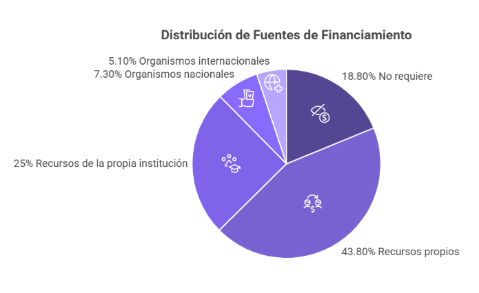
Gráfica 7: Distribución de porcentaje de financiamiento para la investigación 2012 - 2024. Autoría propia. Fuente: Informe de investigación 2012 y encuesta de investigación aplicada a profesores del DAD 2024.
Promedio anual de gastos operativos para proyectos de investigación. El promedio de gastos anuales para proyectos de investigación en ambos periodos de la investigación (2012 y 2024), en un 80% de los investigadores encuestados asciende a un total de $50,000.00, sin embargo, el 20% restantes señalaron cantidades que van de los $50mil a $200mil, sobre todo por tratarse de proyectos de carácter internacional en el que los costos de viáticos, boletos de avión y hospedaje son cotizados en moneda extranjera, ver gráfica no. 8.
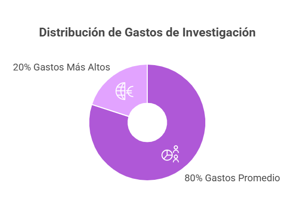
Gráfica 8: Promedio anual de gastos operativos para la investigación 2012 – 2024. Autoría propia. Fuente: página web DAD.
Redes de Investigación. Las redes de investigación son esenciales para potenciar la colaboración científica, ampliar el impacto de los proyectos académicos y fortalecer la formación de investigadores y al lograr integrar comunidades académicas diversas, estas promueven la interdisciplinariedad, transversalidad y la transdisciplinariedad ya que promueve el intercambio de saberes y el acceso a recursos compartidos. Su importancia radica en la capacidad de generar conocimiento colectivo con pertinencia social, responder a desafíos globales y elevar la calidad de la producción científica y se muestra como favorece la movilidad académica, la internacionalización de la investigación y la participación en convocatorias de alto nivel. Las redes son pilares estratégicos para el avance sostenido de la investigación universitaria.
La inclusión de los cuerpos académicos en redes de investigación no se consideró en el cuestionario de 2012, pero se incorporó en 2024 por su valor para la evaluación del PROESDE-UDG, del PRODEP-SEP y para el ingreso o renovación en el SNI (CONACYT).
A este respecto los profesores que respondieron la encuesta 2024, señalaron 56% el pertenecer a alguna red nacional o internacional, y 44% manifestaron no pertenecer a ninguna de ellas, las mencionadas fueron:
Red Alianza Pacífico de Investigación
Red Iberoamericanas de Estudios del Desarrollo (RIED)
Red Internacional de Investigadores en Competitividad (RIICO)
Red Regional de Centros Universitarios (UDG)
Red Internacional de Investigación en Articulación Productiva en el sector primario (RIIAP)
Como se podrá apreciar la mayoría de los investigadores participan en redes internacionales, lo que da la oportunidad de mejorar las condiciones de investigación de la Institución (UDG/CUCEA).
A partir de lo planteado anteriormente se presentan algunas recomendaciones para mejorar la función de investigación en el Departamento de Administración; con objeto de respetar las opiniones de los participantes en la encuesta se consideraron la totalidad de las propuestas agrupadas en tres rubros: de comunicación e información, de recursos y de investigación.
a) De comunicación e información.
Propiciar el trabajo en equipo y lograr una integración colectiva.
Compartir proyectos de los cuerpos académicos para enriquecerse con la información de los investigadores.
Mayor interés y formalidad en el trabajo de investigación
Difundir entre los alumnos los seminarios de investigación
Compartir experiencias de investigación y dar libertad de participación de acuerdo con los intereses de los profesores.
Formación de redes de trabajo entre los miembros de la división, del Centro Universitario, de la Red Universitaria, otras universidades nacionales e internacionales y organismos públicos y privados.
Comunicación intrainstitucional e interinstitucional en materia de investigación.
Generación de bases de datos donde se pueda dar a conocer la información en materia de investigación.
Difusión de los productos científicos (publicaciones, revistas, ponencias, entre otros)
Buscar socializar lo que se hace por los investigadores y formar grupos de apoyo para esta labor.
Difusión de opciones para estudios de posgrado en maestría y doctorados nacionales y extranjeros
Elaborar un directorio de revistas de investigación y divulgación, y darlas a conocer para que los profesores publiquen.
b) De recursos
Distribución de mayor cantidad de recursos para los profesores, financiamiento para participación en congresos, publicaciones, cubículos, grabadoras, cámaras digitales.
Involucrar a los profesores docentes que quieran dedicarse a la investigación como colaboradores en los cuerpos académicos y grupos de investigación.
Fortalecer el compromiso por parte de los profesores para participar en los proyectos de investigación
La creación de una figura de tutor para los investigadores jóvenes que pueda servir de orientación y guía.
Publicación de productos académicos en colaboración con editoriales
Buscar recursos externos para realizar investigación
Apoyo a prestadores de servicio social para el trabajo de investigación
c) De investigación
La investigación se debe dirigir hacia áreas que sean relevantes e importantes con un sentido de utilidad social por sector.
Monitoreo y Evaluación de los profesores a través de resultados de informes personales mensual o bimestralmente con la investigación
Seguimiento a los proyectos de investigación
Acercamiento con los investigadores locales, nacionales e internacionales para intercambio de experiencias y resultados de investigación
Programa de sensibilización para impulsar la investigación como complemento de la docencia
Realización de talleres de integración donde se presenten los trabajos y las líneas de investigación que se están llevando a cabo.
Apoyo en formar grupos de investigación y edición de libros
Analizar la manera en que los profesores dediquen más tiempo a la investigación
Fortalecer los cuerpos académicos e Integración de más profesores a los mismos
Ligar la investigación con la vinculación universitaria, extensión y difusión
Descarga horas clase para el trabajo de investigación.
Incorporación de profesores miembros del SIN con categoría de profesor de asignatura a profesores de tiempo completo.
Algunas sugerencias adicionales para la realización de los seminarios fueron: programarlos con cierta periodicidad y en ambos turnos; además de estar ligados a los cuerpos académicos, se convoque a los profesores en general; que sirvan para orientar a los profesores hacia la investigación y se conviertan en una forma para capacitarlos e introducirlos a la investigación; a partir de los resultados de los seminarios que se programen conferencias en donde se den a conocer los avances del trabajo de investigación.
Análisis de los resultados
El análisis cualitativo permite comprender la evolución del profesorado, desde su incorporación hasta su consolidación como investigadores, identificando patrones, trayectorias y obstáculos, así como las motivaciones y contextos que influyen en su permanencia y en su incorporación a programas como el PRODEP y el SNI. Esta consolidación no solo refleja la productividad individual, sino el impacto colectivo en los cuerpos académicos, las líneas consolidadas y las redes de colaboración. Presentándose los hallazgos de las etapas de 2012 y 2024, con base en los instrumentos aplicados y en documentos institucionales.
Al realizar el análisis comparativo de las encuestas aplicadas a los profesores investigadores del Departamento de Administración del CUCEA, en el año 2012 y 2024, se obtuvieron resultados interesantes entre ellos mencionar que la plantilla de profesores del 2012 al 2024 se ha incrementado en un 68.5%, a pesar de las defunciones y jubilaciones de profesores de tiempo completo, encontrando que alrededor del 75% de los profesores son de asignatura; con respecto al grado de estudios se ha visto un avance importante, los profesores que contaban con grado de maestría para el 2012 solo eran 53, para el 2024 ya son 160, teniendo un incremento del 302%, solo el 25% de los profesores cuentan con grado de doctor, por lo que pensando en estas cifras es importante que todos aquellos docentes con doctorado contaran con tiempo completo, y empezar a incorporar a profesores con maestría de mayor antigüedad y con actividad en apoyos de investigación, más sin embargo no es así, por lo tanto, su gran mayoría, de acuerdo a las encuestas de investigación aplicadas a los profesores no les interesa participar o realizar algún proyecto de investigación hasta este momento
Se muestra cómo se ha incrementado considerablemente el número de miembros del SNI pasando de 5 a 24 miembros, sin embargo el 50% de los miembros tiene nombramiento de profesor de asignatura lo que puede complicar la consolidación de estos en el trabajo de investigación del Departamento de Administración y su impacto en la Red Universitaria; por otro lado en cuanto a profesores con perfil PRODEP han disminuido de 27 a 24 en los últimos años debido al fallecimiento de algunos de ellos y a la jubilación de otros.
Por otro lado, es posible apreciar al analizar las líneas de investigación y quienes lo realizan, que existe un incremento en la producción y a pesar de la baja de profesores de tiempo completo el trabajo realizado recae sobre el profesorado activo; más para la cantidad de profesores que se han integrado, no existe una relación directa entre la producción de investigación y la participación de los nuevos profesores. Agregando que existe variedad de trámites para el ingreso de nuevos investigadores a los cuerpos académicos, así como falta de apoyo económico, por ajustes presupuestales en el Departamento de Administración y del Centro Universitario por lo que solo unos cuantos profesores pertenecientes a cuerpos académicos tienen la oportunidad de participar en congresos nacionales e internacionales ya que la mayoría son pagados por su cuenta.
Un obstáculo que no permite llevar a cabo proyectos de investigación es la falta de tiempo, debido a la saturación de los docentes en la impartición de clases frente a grupo, labores de tutoría y gestión académica o incluso con proyectos especiales del propio departamento u otras áreas del centro universitario lo que les impide dedicarle horas a la semana a esta tarea.
La mayoría de los investigadores del departamento de administración realizan sus trabajos de investigación con colegas del departamento lo que facilita la comunicación y avance continuo de los trabajos, sin embargo, una tercera parte lo hace de manera individual y solamente unos cuantos realizan intercambios con investigadores nacionales e internacionales por lo que esta parte tendría que reforzarse estableciendo vínculos institucionales con universidades del país y el extranjero.
Los cuerpos académicos parte de su labor cotidiana implica un involucramiento de profesores con perfil PRODEP-SEP, y SNI-CONACYT, y estudios de doctorado e investigadores como parte de una política institucional, por lo que sería conveniente analizar al detalle su funcionamiento y hacer propuestas que permitan un desarrollo armónico de los profesores y por lo tanto del área a la que pertenecen. A este respecto cabe mencionar que de los diez cuerpos académicos el nivel en el que se encuentran siete están en formación, 1 en consolidación y 2 consolidados; tal como se comentó anteriormente, es difícil cambiar de un estatus a otro debido a la escasa producción que existe en ellos.
Mientras que si bien es cierto el financiamiento es un aspecto importante para la realización de la labor de investigación sobre todos en proyectos de campo, en algunos casos se requiere realizar viajes a nivel nacional e internacional, y resulta difícil que los investigadores desvíen ingresos personales para este fin, pues desafortunadamente la situación actual que vive la universidad es un reflejo de la disminución permanente de presupuesto federal y estatal destinado a esta actividad y al no contar con recursos para la realización de esta labor, los proyectos de investigación se ajustan a las posibilidades económicas de los investigadores que deciden invertir en este punto.
Un aspecto sobresaliente es el incremento de participación de los investigadores y cuerpos académicos en redes académicas, locales, nacionales e internacionales, esto permite el intercambio permanente de procesos, ideas y contactos para la realización de proyectos específicos basados en las líneas de investigación.
Conclusiones
La investigación académica del Departamento de Administración del CUCEA no es un mero complemento en la formación de docentes y estudiantes, sino un elemento esencial para la evolución del conocimiento, la innovación y el progreso social y económico del estado y del país. El análisis comparativo de las encuestas de 2012 y 2024 identificó transformaciones cruciales en el desarrollo del profesorado, su nivel de formación y su participación en la generación de conocimiento, evidenciando oportunidades y desafíos.
Uno de los resultados más significativos es el incremento del 68.5% en la plantilla durante los últimos doce años; sin embargo, este crecimiento no va en relación directa con el de los proyectos de investigación, y cerca del 75% de los docentes son de asignatura, por lo que la mayoría no dispone de condiciones óptimas para investigar de forma continua. Esto limita la consolidación de grupos fuertes y reduce la producción científica, que recae sobre el 12% de profesores de tiempo completo, pese a que la investigación es un potenciador de propuestas y modelos de negocio para el desarrollo del estado y del país.
El nivel de formación ha mejorado: los docentes con maestría se han cuadruplicado, pasando de 40 en 2012 a 160 en 2024, y el 25% cuenta con doctorado. Aun así, la mayoría de los académicos con posgrado no tiene plaza de tiempo completo, lo que restringe su participación en investigación y revela una brecha en la asignación de recursos. Un logro notable es el incremento de investigadores en el SNI, de 5 en 2012 a 24 en 2024, reflejo del esfuerzo individual de los docentes; no obstante, el 50% de ellos tiene nombramiento de asignatura, lo que dificulta la estabilidad y continuidad de la investigación.
En cuanto a los cuerpos académicos, de los 10 existentes 7 están en formación, 1 en consolidación y solo 2 consolidados, lo que evidencia dificultades estructurales asociadas a la disminución de profesores de tiempo completo y a la falta de apoyo institucional. El mayor desafío es el insuficiente financiamiento para proyectos académicos y de campo: ante la reducción progresiva del presupuesto federal y estatal, la mayoría de los docentes financia con recursos personales muchas de sus actividades, lo que limita la producción y desmotiva la participación.
El fortalecimiento de la investigación debe ser una prioridad institucional respaldada por políticas que garanticen financiamiento adecuado. La disminución de docentes con perfil PRODEP, de 27 en 2012 a 24 en 2024, refleja la dificultad para mantener investigadores activos. La Universidad debe impulsar programas de financiamiento, incentivos a la producción científica y esquemas de colaboración interinstitucional.
Un aspecto positivo es el incremento de la participación en redes académicas nacionales e internacionales, que permiten establecer vínculos interinstitucionales, compartir conocimiento y consolidar investigaciones de alto impacto. La investigación no puede seguir viéndose como una actividad complementaria: en un mundo globalizado y competitivo, la generación de conocimiento es fundamental para el desarrollo económico y social y para el posicionamiento científico de México.
En este momento de transición, el CUCEA tiene la oportunidad de convertirse en un referente en investigación aplicada, mejorando la calidad educativa y formando profesionales con visión crítica y propositiva. Apostar por la investigación no es un lujo, sino una necesidad urgente para potenciar el impacto de la universidad.
Invertir en investigación es apostar por un futuro más sólido, donde el conocimiento y la innovación sean pilares de un México más competitivo. La pregunta no es si la investigación es importante, sino cómo y cuándo se tomarán las decisiones para fortalecerla de manera estructural y sostenible.
En general, la labor de investigación del Departamento de Administración ha mantenido durante diez años continuidad en cuanto a quienes la realizan, pese a contar con cada vez menos profesores de tiempo completo y más de asignatura. El panorama es conservador por las dificultades en distintos rubros, por lo que será necesario aumentar la gestión de ingresos y recursos a nivel del Centro Universitario y del Departamento, y revisar los lineamientos institucionales para privilegiar esta actividad. Apostemos por la ciencia, impulsemos la investigación y construyamos un mundo donde el conocimiento sea la herramienta más poderosa para transformar realidades.
Referencias
Álvarez, L., & Carrillo, M. (2020). Financiamiento y desempeño de cuerpos académicos en universidades públicas mexicanas. Revista de Gestión Universitaria.
Centro Universitario de Ciencias Económico Administrativas. (s.f.). Departamento de Administración. Universidad de Guadalajara. https://www.cucea.udg.mx/acerca-de/estructura-organizacional/departamentos/administracion
Centro Universitario de Ciencias Económico Administrativas. (s.f.). Oferta académica. Universidad de Guadalajara. https://cucea.udg.mx/oferta-academica
CONACYT. (2020). Convocatoria 2020 para ingreso o permanencia en el SNI. Consejo Nacional de Ciencia y Tecnología. https://secihti.mx/
Congreso del Estado de Jalisco. (1994, 15 de enero). Ley Orgánica de la Universidad de Guadalajara (Decreto 15319). Periódico Oficial del Estado de Jalisco, Sección II. https://info.jalisco.gob.mx/sites/default/files/leyes/Ley_Organica_Universidad_de_Guadalajara.pdf
Cordero, A., & Ávila, M. (2016). La gestión de proyectos de investigación en la universidad: Un enfoque estratégico. Revista Mexicana de Investigación Educativa.
De la Cruz, R., & Méndez, J. (2019). Redes académicas y su impacto en la producción científica universitaria. Revista Iberoamericana de Educación Superior.
De la Torre, S., & Pérez, L. (2018). Gestión estratégica de líneas de investigación en instituciones de educación superior. Revista Iberoamericana de Educación Superior.
Departamento de Administración. (2012). Informes de actividades del Departamento de Administración. Universidad de Guadalajara.
Departamento de Administración. (s.f.). Estadísticas. Universidad de Guadalajara, CUCEA. https://dad.cucea.udg.mx/estad%C3%ADsticas#h.cgbyprq4gi3f
Flick, U. (2015). Introducción a la investigación cualitativa (5ª ed.). Madrid: Ediciones Morata.
Garza, J., & Ledezma, A. (2015). Planeación académica y líneas de investigación: Un binomio estratégico. Revista Electrónica de Investigación Educativa, 17(3), 45–59.
Gobierno de México. (1917). Constitución Política de los Estados Unidos Mexicanos. https://www.diputados.gob.mx/LeyesBiblio/pdf_mov/Constitucion_Politica.pdf
Gobierno de México. (2019). Ley General de Educación. Diario Oficial de la Federación. https://www.gob.mx/cms/uploads/attachment/file/497432/decreto-ley-gral-educacion-dof-30092019.pdf
Gobierno del Estado de Jalisco. (1997). Ley de Educación del Estado de Jalisco. Periódico Oficial del Estado de Jalisco. https://www.sep.gob.mx/work/models/sep1/Resource/9db15657-4ea9-47fe-9fe6-4a6181040a2c/jalisco.pdf
González, M., & Martínez, J. (2016). Diseño de proyectos de investigación en educación superior. Editorial Trillas.
Hernández-Sampieri, R., Fernández-Collado, C., & Baptista, P. (2014). Metodología de la investigación (6ª ed.). México: McGraw-Hill Education.
Romero, C. (2019). Metodología para la delimitación del objeto de estudio en ciencias sociales. Revista Universitaria de Investigación.
Secretaría de Educación Pública (SEP). (2019). Lineamientos operativos del Programa para el Desarrollo Profesional Docente (PRODEP). https://www.dgesu.ses.sep.gob.mx/prodep
Toche, N. (2019). México, lugar 28 en producción científica. El economista. https://www.eleconomista.com.mx/arteseideas/Mexico-lugar-28-en-produccion-cientifica-20190702-0167.html.
Universidad de Guadalajara. (1994). Estatuto General de la Universidad de Guadalajara (Dictamen No. 29636). Periódico Oficial del Estado de Jalisco. https://secgral.udg.mx/normatividad/general/estatuto-general-de-la-udeg
Universidad de Guadalajara. (2019). Plan de Desarrollo Institucional 2019–2025, Visión 2030. https://www.pdi.udg.mx/
Villanueva, S. G., & Amorós, J. E. (2019). Importancia de la investigación para México. Contaduría Pública. https://contaduriapublica.org.mx/2019/06/01/importancia-de-la-investigacion-para-mexico/
Zorrilla, M., & Tapia, A. (2017). Proyectos de investigación como articuladores de cuerpos académicos en formación. Revista de Educación y Desarrollo.